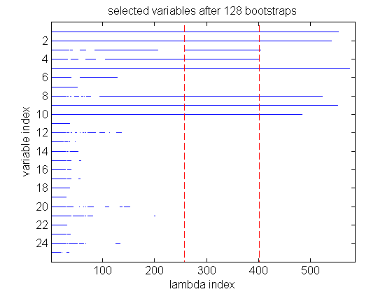

Simple bolasso demo
% This file is from pmtk3.googlecode.com setSeed(0); n = 1000; %number of data points d = 25; %number of dimensions r = 10; %number of relevant dimensions, (first 8) ndataSets = 1; lassoSignConsistent = false; [X,y] = bolassoMakeData(n,d,r,ndataSets,lassoSignConsistent); trueSupport = 1:r; %estimate support with bolasso and the largest consistent region %heuristic,(default). estimatedSupport = bolasso(X,y) %now do the same but use cross validation instead of LCR estimatedSupport = bolasso(X,y,'modelSelectionMethod','CV','plotResults',false); %If we want both the LCR and CV results, we can get them both at once, %(more efficiently) with the following syntax: if(0) estimatedSupport = bolasso(X,y,'modelSelectionMethod','BOTH') end
estimatedSupport =
Columns 1 through 7
1 2 3 4 5 8 9
Column 8
10
